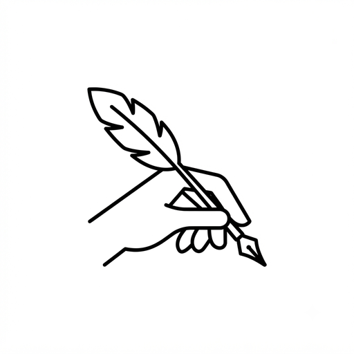

Transcribe manuscripts, and edit them
Type a manuscript line by line beside its images, in any script. Then bring several manuscripts together: Manuscribe compares them, and helps you make a critical edition with its apparatus, ready to print.
Free. Nothing to sign up for. Opens in your browser.

What it does
Transcribe
The scan above, the typing area below, line for line. Four layouts, commentaries around the text included. Type with your own keyboard or with built-in schemes such as ITRANS.
Compare
Manuscribe lines up your manuscripts word by word and shows where they differ. You choose the reading, or put in your own.
Edit
The apparatus is written for you, in the conventions you choose, with notes that explain themselves.
Publish
A PDF, a page to print, a reader to share, and TEI and LaTeX for other tools. In 38 languages and every script of Unicode.
Installing it (optional)
Manuscribe works as it is in any recent browser. Installing it gives it an icon and a window of its own, and it then opens without the internet.
Chrome or Edge
Open Manuscribe and click Install Manuscribe on its start screen, or the install icon at the right of the address bar.
Safari on a Mac
Open Manuscribe, then choose File → Add to Dock.
iPad or iPhone
Open Manuscribe in Safari, tap Share, then Add to Home Screen.
No internet at all?
Download the copy above, unzip it, and double-click Manuscribe.html. It needs the internet once, for the fonts of your script.
Your work
It stays on your computer. Your manuscripts and transcriptions are kept by your browser. Nothing is uploaded anywhere.
Keep a backup. Press Ctrl + S (⌘ + S on a Mac) in Manuscribe to save a backup file. Clearing your browser's data deletes your work, and a backup file also takes your work to another computer.
Use the same browser each time. Each browser keeps its own work: what you did in Chrome is not in Safari.
Which computers
Windows, macOS, Linux, ChromeOS and iPad. Manuscribe is tested in Chrome and Edge; it is written for Safari (17 or later) and Firefox (125 or later) too, which are being tested, so keep backups if you use them. On a phone you can read and review; transcribing wants a larger screen.